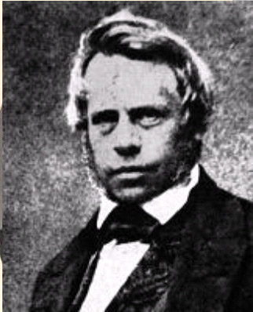

|  |
Henle 's fibers = the inner fibers of photoreceptors
Hassle-Henle bodies = Small hyaline excrescences in the periphery of the Descemet membrane. They occur because of focal alteration in endothelial cell homeostasis, resulting in modified production or deposition of membrane material in a nonplanar fashion
A student and the closest co-worker of Johannes Müller (1801-1858), Friedrich Gustav Jacob Henle helped prepare the way for cytology through his studies of epithelia. He created the first histology based on extensive microscopical investigations, and, through his theory of miasma and contagion, was among the precursors of modern microbiology.
A follower of Xavier Bichat's (1771-1892) pioneer work in microscopic anatomy, Henle became the greatest histologist of his day and one of the finest anatomists of any area. His importance to the development of histology is comparable to that of the Renaissance master Andreas Vesalius on gross anatomy. A man of wide interests, equally at home with the arts as with science, Henle led a life filled with politics, romance, and intrigue.
Henle was born of Jewish parents at Fürth near Nuremberg. His father, Wilhelm Henle, was a merchant; his mother, Helena Sophia Diespeck, was the daughter of a rabbi. The social position of a Jewish family in the small town of Fürth was rather circumscribed, but increasing economic prosperity finally made possible relations with cultured circles. Henle received his first instruction at home from a private tutor; later he attended the Gymnasium at Mainz and Koblenz. His education was directed primarily toward classical and modern languages; he was also a good draftsman and was musically talented. In 1820 he suffered an attack of periostitis; it subsided but often recurred. After the family had converted to the evangelical belief in 1821, Henle for a time thought of becoming a minister. Medicine was not considered until, in Koblenz, he met Johannes Müller socially at a home musicale.
Henle began his medical studies in October 1827 at the University of Bonn, where he became a member of the Burschenschaft (student’s association) in the fall of 1829. Soon afterward, disappointed by the unkind behaviour of other students, he severed this connection by continuing his studies at the University of Heidelberg in the spring of 1830.
Henle’s continuing interest in anatomical investigations was rewarded by Müller’s inviting him on a trip to Paris, where they met Baron Georges Cuvier (1769-1832) and René Dutrochet (1776-1847). In the Jardin des plantes he studied the anatomy of fish. Henle received the M.D. on April 4, 1832 at Bonn with a dissertation on the pupil membrane and the blood vessels within the eye. In March 1833 he passed the state medical examination in Berlin and immediately became an assistant to Müller, who in April 1833 was named professor of anatomy and physiology at Berlin. In 1834 Henle followed to become Müller’s prosector at the Anatomical Institute.
Being politically active was a pursuit definitely not without its dangers in the decades following the Napoleonic wars. A first attempt to qualify as lecturer failed for political reasons, since all former members of the Burschenschaft were suspected of being enemies of the state. In 1835 Henle was arrested for this reason and detained in the Hausvogtein in Berlin to await trial, but through the intervention of Alexander von Humboldt (1769-1859) and others he was released from confinement after four weeks.
Meanwhile he lost his post as prosector and, following a long investigation, was condemned to six years in prison in January 1837, yet within a few weeks he was pardoned and thus could return to his post. In the same year he qualified as lecturer in Berlin, receiving the Venia legendi for his famous habilitation thesis, and was allowed to teach. This was the time when the doctrine of the cell by Mathias Schleiden (1804-1881) and Theodor Schwann (1810-1882) revolutionised biology, and for Henle the acquaintance of these two giants contributed to make his period in Berlin particularly fertile.
In 1840 Henle moved to Zürich to become professor of anatomy, later also of physiology. At Zurich Albert Kölliker (1817-1905) was his prosector. It was in Zurich, in 1841, Henle published his most important book, Allgemeine Anatomie [General Anatomy], which is the first systematic work on histology. The book made him world famous and is epoch-making for several reasons, among them his recognition of the cell theories of Schwann, which were of basic importance to his own work, and the fact that it was thoroughly based on the latest and most fundamental scientific knowledge. In Zürich he also founded what was to become one of the most important journals in the German language, the Zeitschrift für rationelle Medicin, a product that emerged from his close friendship with the clinician Karl von Pfeufer (1806-1869)
In 1844 Henle left Zürich for Heidelberg to teach anatomy, anthropology and physiology as second professor, along with Friedrich Tiedemann (1781-1861). When the latter retired as emeritus, Henle also took over the direction of the Anatomical Institute, of which he was in charge from 1848 to 1852. That year he commenced his last tenure, succeeding the diseased Konrad Johann Martin Langenbeck (1776-1851) in the chair of anatomy and the directorship of the institute of anatomy in Göttingen, where he was active until his death 33 years later, in 1885.
Whilst in Heidelberg he wrote Handbuch der rationellen Pathologie (Handbook of Rational Pathology) (1846-1853). The books described diseased organs in relation to their normal physiological functions, and represents the beginning of modern pathology.
Very revealing of the romantic and sentimental young Henle is his first marriage. During his stay in Zurich he fell in love with Elise Egloff, who worked as a governess in the house of his friends; he set her up in her own lodgings and later arranged for his sister to educate her and give her social polish. They were married in March 1846. One son and one daughter resulted from this union, which ended barely two years later with his wife’s death from tuberculosis. In August 1849 Henle married Marie Richter, the daughter of a Prussian officer; they had four daughters and one son.
Henle belonged to many scientific organizations, including the Leopoldine Academy, the Belgian Academy of Medicine (honorary member), the Bavarian Academy of Sciences of Munich (foreign member), the Berlin Academy (corresponding member), the Petersburg Academy of Medicine (honorary member), and the Royal Academy of Sciences (Amsterdam). He received a high order from the Prussian government, as well as the title of privy superior medical counsellor (geheimer Ober-Medicinalrath).
Seldom is anyone introduced to scientific work as Henle was. Johannes Müller began to edit the Archiv für Anatomie, Physiologie und wissenschaftliche Medicin in 1834, and it became a clearinghouse for studies oriented toward the natural sciences. Henle assumed the major share of the work of editing it and thus became familiar with current topics of biology. After undertaking comparative anatomical studies on the electric organ of the ray and on annelids, he soon turned his attention to increasingly precise microscopical research. Hints had been accumulating from all sides regarding the smallest structural elements of plant and animal organisms.
The concept of the cell first became current among the botanists but was quickly extended to animals as well. Along with Gabriel Valentin (1810-1883), Henle was among the first authors to use the term «cell».
It was in Berlin during the years of 1832 to 1834 that Henle published the first descriptions of the structure and distribution of human epithelial tissue and of the fine structures of the eye and brain. Henle’s study of the larynx, which was highly praised by Humboldt, was a completely independent comparative anatomical work.
In the last period of his activity in Berlin he studied problems in pathology that he had encountered in his editorial work on Müller’s Archiv. By far the most important of these was his article (1840) Von den Miasmen und Kontagien (On Miasmas and Contagions and on the Miasmatic-Contagious Diseases), in which he embraced the unpopular micro organism theory of contagion put forth by the Renaissance forerunner of modern epidemiology, Girolamo Fracastoro (1478-1553). At this time the term miasma was used for causes of disease that acted on the body from the outside, while contagia acted on or in the body itself. But sharp boundaries between these two should not exist, since diseases originating from miasma could become contagious. Most important was the knowledge that the carriers of disease were actually living material and that therefore the contagium, like a parasite, colonized the host body. As a result of its own powers of reproduction, even a small group of contagia suffices to cause s specific disease. Henle stated: "The material of contagions is not only an organic but a living one and is indeed endowed with a life of its own, which is, in relation to the diseased body, a parasite organism.” Henle had observed microorganisms in the excretions of diseased animals but was not able to prove that they were a direct cause of the disease. Such ideas, although not absolutely new, were often considered unworthy of belief; it required more than thirty years for their acceptance.
Among Henle's students at the University of Göttingen (1852-1885) was Robert Koch, who was to provide definite proof of Henle's belief in microbes.
In 1837 Henle presented as his Habilitationsschrift an investigation of the epithelium of the intestinal villi, which demonstrated that he was already one of the leading experts in this field of histology. The extent of his progress is also shown by his lecture of February 16, 1838, to the Hufelandsche Medicinisch-Chirurgische Gesellschaft on mucus and pus formation. He consistently called the structural elements of the epithelium «cells»; he also described the epithelium of the urinary bladder as a form intermediate between the cylindrical and the pavement epithelium. He reported on the extension of the epithelia in the human body in 1838, distinguishing three types: pavement, cylindrical (columnar), and ciliated. Moreover, he established that they cover all the liquid free surfaces of the body, all the inner surfaces of its canals and ducts, and all the walls of its cavities.
An important work of its time was Henle’s i>Handbuch der retionellen Pathologie. It stems chiefly from his years at Heidelberg and presents pathology, one of the fundamentals of the physician's activity, again as resting on scientific knowledge; previously medicine - at least in German-speaking areas - was practiced for several decades primarily in the light of Naturphilosophie. Of still greater importance was his Handbuch der systematischen Anatomie. Composed in Göttingen over a period of sixteen years, it contains the entire contemporary knowledge of the structure of the human body and a multitude of good illustrations. If the presentation of the central nervous system is disregarded, the work may still be useful for orientation in the subject of gross human anatomy and its occasional variations. It did not become obsolete as a textbook until the fundamental approach to anatomy gained dominance.
Henle’s name is best known today for the loop-shaped portion of the nephron named for him. His observation of it in 1862, supported by isolation preparations, was correct in itself but the interpretation was completely wrong: according to Henle, there were two loop-shaped tubules, each of which was connected at one end to a different renal corpuscle. Nevertheless, his study resulted in a new series of investigations on the kidneys through which, between 1863 and 1865, their structure was definitely determined.
His explanation of metastasis in cancer was the forerunner of Virchow's cellular pathology.
Henle was a superb lecturer, a poet and a fine musician, playing the violin, viola and violin cello. He maintained it was a physician's duty to prevent and cure disease, that disease is a deviation from normal physiological processes and death the cessation of metabolism. He had a wide circle of friends, including the composer Felix Mendelssohn (1809-1847) and Humboldt. In his last years countless honours were bestowed on him; the Universities of Breslau made honorary doctor of philology, the University of Edinburgh conferred him Dr. of common law.
Henle’s health often hindered his activity, since sliver was frequently discharged at the site of the periostitis; he also suffered from neuralgia. He died of renal and spinal sarcoma.
Henle was very sociable. He loved witty conversations, encouraged home musicals and evening gatherings for reading, and was happy to open his house for concerts. His political ideas were liberal and nationalistic, but he was unable to become reconciled to Prussia’s domestic politics.
For his students he was the beloved «der alte Jacob», which he was also called. Hardly any part of the human body escaped his investigative curiosity.
«I have shown, then, that the infective material must be independently alive, and thought to consist of organisms - either plant or animal - or of parts of animals which have achieved a limited independence.» Pathologische Untersuchungen. Translated by Max Samter.
Bibliography:
Obituaries and biographical: